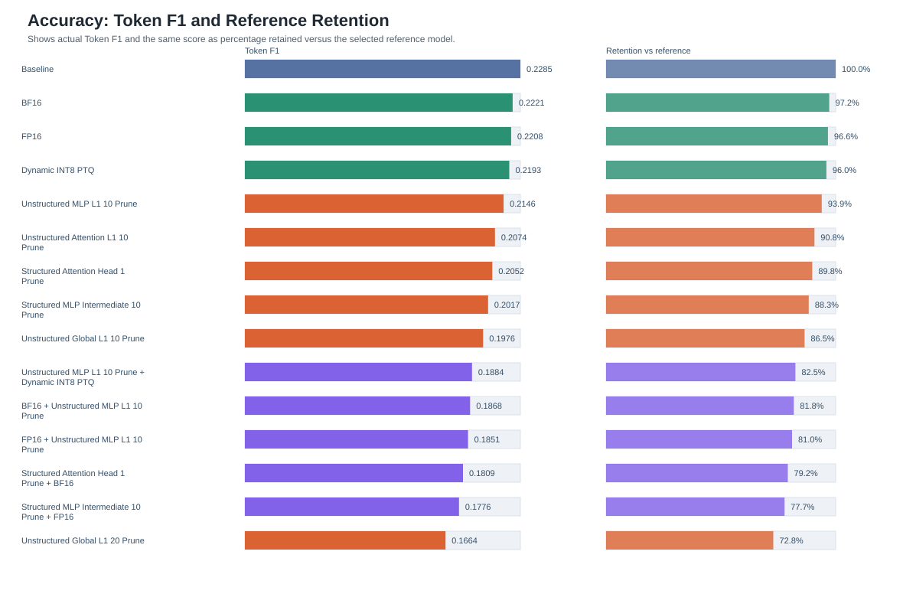
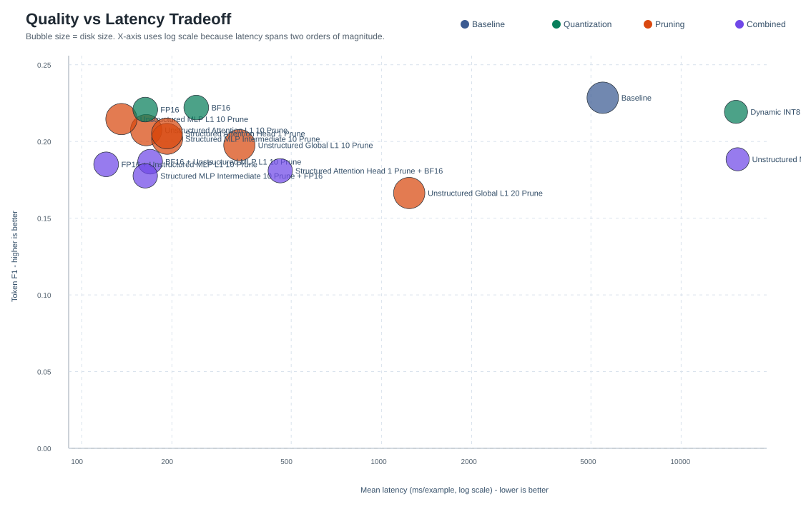
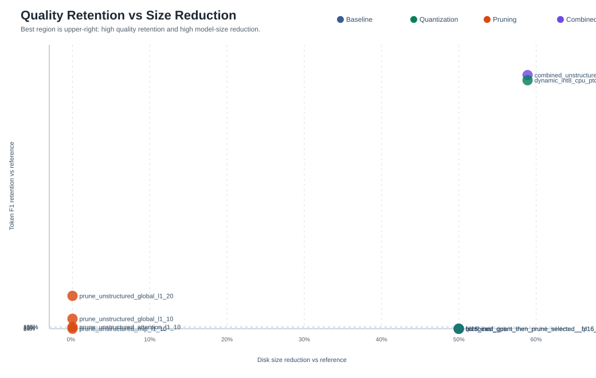
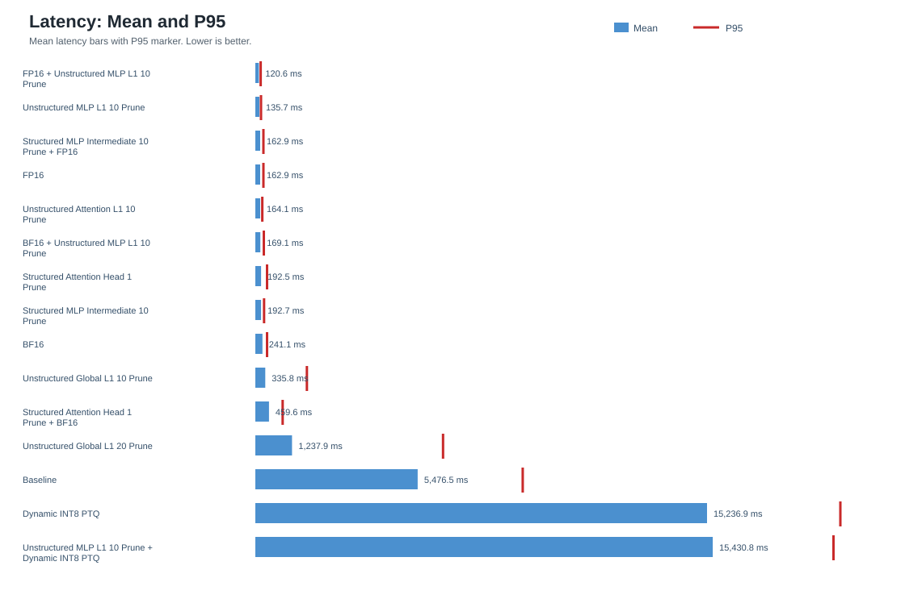
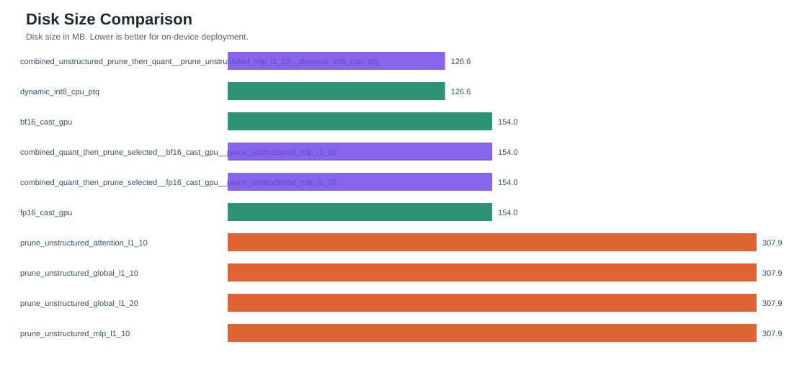
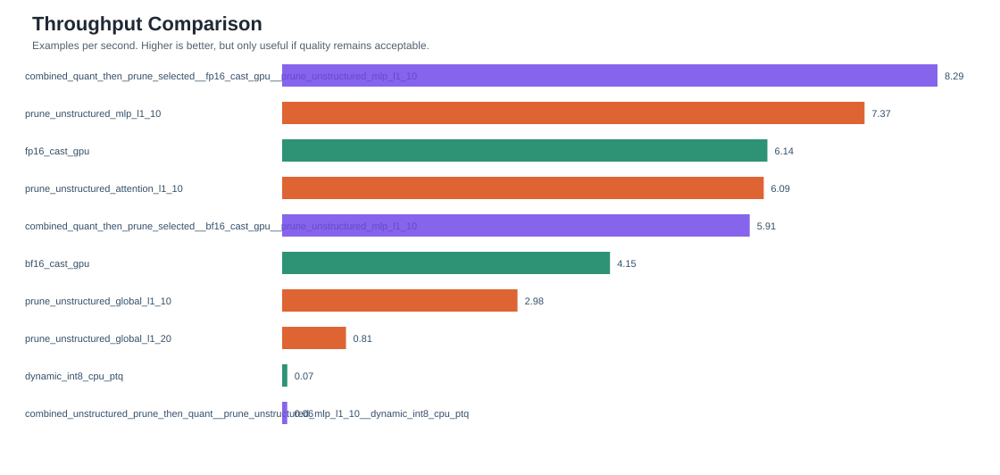
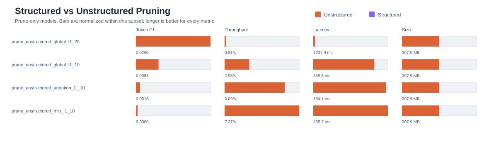
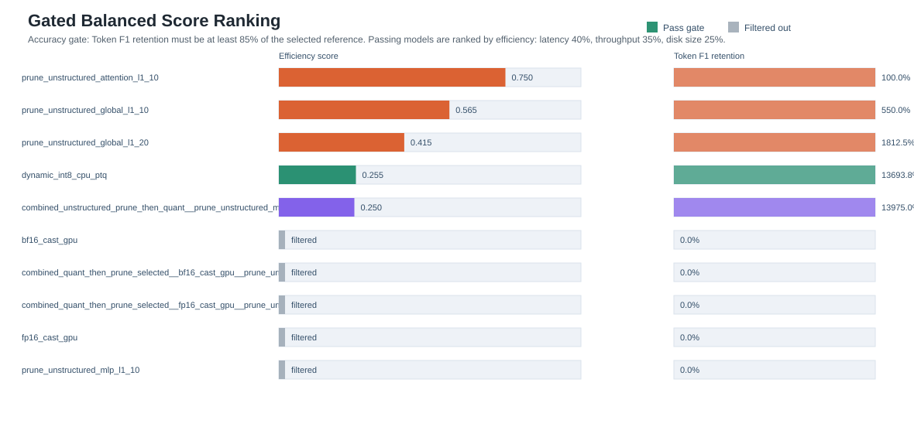

FLAN-T5 Optimization Tradeoff Plots
Generated from results/all_benchmarks.json.
Accuracy: Token F1 and reference retention

Quality vs latency bubble plot

Quality retention vs size reduction

Latency mean and P95

Disk Size Comparison

Throughput Comparison

Structured vs unstructured pruning

Gated balanced score ranking
